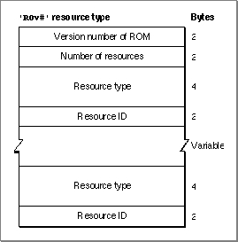

Legacy Document
Important: The information in this document is obsolete and should not be used for new development.
Important: The information in this document is obsolete and should not be used for new development.


Overriding ROM Resources
You can override some of the ROM resources, such as'CURS'resources, simply by putting the substitute resource in your application's resource fork. Other ROM resources, however, such as'DRVR'and'PACK'resources, cannot be overridden in this way because they are already referenced and in use when your application is launched.On startup, system software creates a list of ROM resources that should not be referenced. This list is based on information stored in the System file's resource fork in an
'ROv#'resource whose version word matches the version word of the ROM. You can modify the'ROv#'resource so that it includes the ROM resources that you want to override.
Figure 1-19 shows the structure of an
- WARNING
- You should not override ROM resources unless absolutely necessary. Before overriding ROM resources, you should understand the situation completely.

'ROv#'resource.Figure 1-19 Structure of a compiled ROM override (
'ROv#') resource For information on modifying an
'ROv#'resource, write to Macintosh Developer Technical Support.